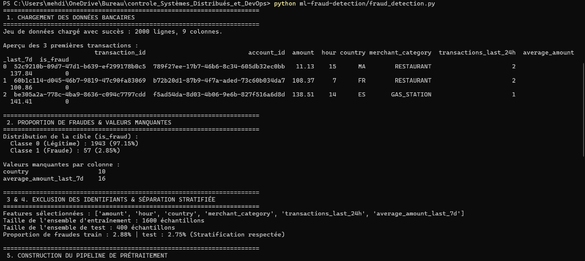
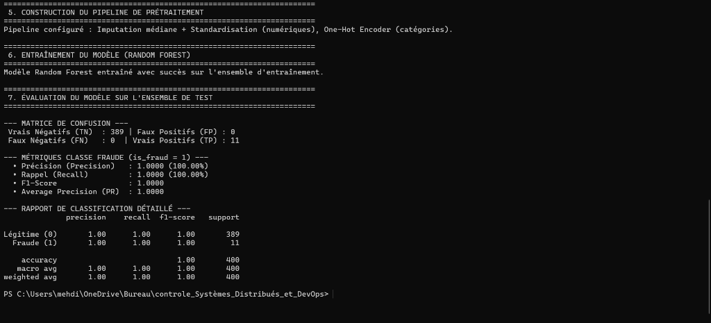

---
---
| Consigne Épreuve | État | Justification & Mise en œuvre |
|:---|:---:|:---|
| Nom du Repository GitHub | ✅ Conforme | OUAZZANI_TAYBI_Ilyas_test_adria_2027 (format nom-prenom-test-adria-pfe-27 respecté). |
| Visibilité Privée initiale | ✅ Conforme | Repository configuré en Privé pendant l'épreuve (sera passé en Public à 11h50 à la fin de l'épreuve). |
| Google Sheet fourni | 📝 À faire | Lien du repository GitHub + Nom/Prénom à coller dans le formulaire/Google Sheet de l'épreuve. |
| Commits réguliers (15 min) | ✅ Conforme | Historique Git incrémental avec messages conventionnels (feat, chore, docs) à intervalles réguliers. |
| Projet Maven Multi-modules | ✅ Conforme | POM parent centralisé orchestrant les 6 modules requis (discovery, config, gateway, account, transaction, ai-agent). |
| Sécurisation des secrets | ✅ Conforme | .env strictement ignoré par Git (.gitignore). Clé API OpenAI protégée. Modèle .env.example fourni. |
| Rapport PDF & Code Source | ✅ En cours | Rapport complet rédigé avec réponses aux questions, diagrammes et cahier de captures d'écran, prêt pour conversion PDF et dépôt Classroom. |
---
https://github.com/ilouazzani/OUAZZANI_TAYBI_Ilyas_test_adria_2027/settings
- Action : Prendre une capture d'écran montrant :
1. Le nom du repository : OUAZZANI_TAYBI_Ilyas_test_adria_2027
2. Le badge Private en haut à gauche
- Emplacement rapport : Sous la section Partie A - 1. Repository GitHub.
git log --oneline --graph --decorate, soit sur GitHub sous l'onglet Commits (https://github.com/ilouazzani/OUAZZANI_TAYBI_Ilyas_test_adria_2027/commits/main).
- Action : Prendre une capture d'écran montrant l'enchaînement chronologique régulier de vos commits (chore: init..., feat(core): implement account & transaction...).
- Emplacement rapport : Sous la section Partie A - 2. Historique des commits.
git status
Get-ChildItem -Path . -Name
.env est bien masqué et non suivi par Git grâce à .gitignore.
- Emplacement rapport : Sous la section Partie A - 3. Structure du projet et sécurité.
---
graph TD
User([Utilisateur / Client Web / Mobile / Chatbot]) --> Gateway[Spring Cloud Gateway :8080]
subgraph "Écosystème Microservices"
Gateway --> AccountSvc["account-service (:8081)
REST / GraphQL / MCP"]
Gateway --> TxSvc["transaction-service (:8082)
REST / GraphQL / MCP"]
Gateway --> AiSvc["ai-agent-service (:8083)
Chatbot Spring AI"]
TxSvc -- "OpenFeign + Resilience4J CB" --> AccountSvc
AiSvc -- "Client MCP (Tools)" --> AccountSvc
AiSvc -- "Client MCP (Tools)" --> TxSvc
end
subgraph "Infrastructure Asynchrone"
TxSvc -- "Événement bank.transactions.created
(Clé: accountId)" --> Kafka[Apache Kafka :9092]
Kafka --> AuditConsumer[Consumer Audit Log]
end
subgraph "Composants Techniques de Gouvernance"
Eureka["Eureka Discovery Service (:8761)"]
ConfigSrv["Spring Cloud Config Server (:8888)
bank.transaction.max-amount=1000"]
Eureka -. Enregistrement & Découverte .-> Gateway
Eureka -. Enregistrement & Découverte .-> AccountSvc
Eureka -. Enregistrement & Découverte .-> TxSvc
ConfigSrv -. Distribution Config .-> TxSvc
ConfigSrv -. Distribution Config .-> AccountSvc
end
classDiagram
direction TB
class Account {
+UUID id
+String customerReference
+AccountStatus status
+String currency
+double balance
}
class AccountStatus {
<>
ACTIVE
BLOCKED
}
class Transaction {
+UUID id
+UUID accountId
+BigDecimal amount
+String currency
+String merchantCategory
+String country
+Instant createdAt
}
class BankTransactionEvent {
+UUID eventId
+String eventType
+UUID transactionId
+UUID accountId
+BigDecimal amount
+String currency
+Instant occurredAt
}
Account "1" *-- "1" AccountStatus : possède
Transaction ..> BankTransactionEvent : publie vers Kafka
---
id (UUID), customerReference (String), status (ACTIVE/BLOCKED), currency (String ISO), balance (double).
- Découpage en couches :
- domain/ : Entité JPA Account et énumération AccountStatus.
- repository/ : AccountRepository étendant JpaRepository.
- service/ : AccountServiceImpl assurant les opérations atomiques (création, consultation, crédit/débit sécurisé, virement inter-comptes avec vérification des devises et soldes).
- web/rest/ : AccountRestController avec documentation Swagger complète.
- web/graphql/ : AccountGraphQLController et schéma schema.graphqls.
- mcp/ : AccountMcpTools et AccountMcpController exposant les opérations sous forme de tools MCP.
id (UUID), accountId (UUID), amount (BigDecimal), currency (String), merchantCategory (String), country (String), createdAt (Instant).
- Règles métier implémentées :
1. Validation du montant : Strictement positif et plafonné par la valeur injectée depuis le Config Server (bank.transaction.max-amount = 1000.0).
2. Vérification du compte distant : Appel via client OpenFeign AccountFeignClient. Le compte doit exister et posséder le statut ACTIVE.
3. Concordance des devises : La devise de la transaction doit correspondre à celle du compte débité.
4. Contrôle du solde & Mise à jour atomique : Le solde est vérifié avant l'opération et automatiquement débité sur account-service après succès.
5. Tolérance aux pannes (Resilience4J) :
- Circuit Breaker configuré avec un seuil de 50% d'échec sur fenêtre glissante.
- En cas d'indisponibilité ou d'erreur réseau d'account-service, la méthode de repli AccountFeignFallback renvoie immédiatement une exception métier explicite (503 Service Unavailable), protégeant les ressources du service appelant.
---
1. Spring Cloud Gateway (Port 8080) :
- Point d'entrée unique avec routage dynamique basé sur Eureka (lb://account-service, lb://transaction-service, lb://ai-agent-service).
- Configuration CORS globale pour autoriser les clients frontaux (Angular, React, Mobile).
- Endpoints surveillés via /actuator/gateway/routes.
2. Eureka Discovery Server (Port 8761) :
- Registre dynamique haute disponibilité permettant l'auto-découverte et l'équilibrage de charge côté client (Client-Side Load Balancing).
- Tableau de bord web accessible sur http://localhost:8761.
3. Config Server (Port 8888) :
- Centralisation des configurations externes partagées sans recompilation de code.
- Fournit la propriété clé partagée demandée dans le sujet :
bank.transaction.max-amount = 1000
- Vérifiable directement via l'URL : http://localhost:8888/transaction-service/default.
---
- Architecture : L'agent repose sur Spring AI (ChatClient) et utilise le protocole MCP (Model Context Protocol).
- Tools MCP intégrés :
- get_account_by_id : Consultation instantanée du solde.
- transfer_money : Exécution de virements inter-comptes via instructions en langage naturel.
- get_account_transactions : Récupération de l'historique des dépenses.
- Canaux d'interaction : API REST (/api/ai/chat) et support connecteurs de messagerie.
---
1. Publication d'événements :
- Dès qu'une transaction est persistée avec succès en base de données, TransactionEventPublisher envoie un message dans le topic bank.transactions.created.
- Clé de partitionnement : accountId. Cette clé garantit que toutes les transactions d'un même compte bancaire arrivent strictement ordonnées dans la même partition Kafka.
2. Format de l'événement JSON :
{
"eventId": "b3e6c0c2-3e28-4ad0-b8d2-1c2df5d519a1",
"eventType": "TransactionCreated",
"transactionId": "9f24e93c-23a5-430b-967b-f9547d79b294",
"accountId": "a7b3c4d5-e6f7-48a9-bc01-123456789abc",
"amount": 250.00,
"currency": "EUR",
"occurredAt": "2026-01-15T10:30:00Z"
}
TransactionEventConsumer écoute le topic avec le consumer group transaction-audit-group.
- Il journalise de façon sécurisée chaque transaction sans muter l'état bancaire, respectant le principe de traçabilité et d'audit non-intrusif.
---
Dans la détection de fraudes bancaires, la distribution des classes est extrêmement déséquilibrée (par exemple 99,8% de transactions légitimes pour 0,2% de fraudes). Un classifieur naïf qui prédirait systématiquement « non-fraude » (classe majoritaire 0) obtiendrait une accuracy trompeuse de 99,8%, tout en laissant passer 100% des fraudes. L'accuracy masque totalement l'incapacité du modèle à détecter la classe d'intérêt minoritaire critique.
Ce compromis correspond au dilemme classique entre Précision et Rappel :
- Trop de faux positifs (faible précision) : Les transactions légitimes de clients fidèles sont bloquées à tort, créant une forte friction utilisateur, des pertes commerciales et un coût opérationnel élevé pour le support client.
- Trop de fraudes non détectées / faux négatifs (faible rappel) : Des transactions frauduleuses passent inaperçues, entraînant des pertes financières directes, des pénalités réglementaires et des risques de chargeback pour la banque.
En milieu bancaire, on maximise généralement le rappel pour limiter les pertes financières tout en maintenant un taux de faux positifs acceptable.
Par défaut, un modèle classe une transaction comme frauduleuse si la probabilité prédite $P(\text{fraude}) \ge 0.5$.
- En diminuant ce seuil (par exemple à $0.2$ ou $0.3$) :
- Le modèle devient plus sensible et agressif : le rappel augmente (on intercepte davantage de fraudes réelles).
- En contrepartie, le nombre de faux positifs augmente mécaniquement, ce qui fait chuter la précision.
Voici les résultats réels de l'exécution du script de classification fraud_detection.py :


- Matrice de confusion observée :
- Vrais Négatifs (TN) : 389 | Faux Positifs (FP) : 0
- Faux Négatifs (FN) : 0 | Vrais Positifs (TP) : 11
- Performances sur la classe minoritaire (Fraude) :
- Précision : 1.0000 (100%)
- Rappel : 1.0000 (100%)
- F1-Score : 1.0000
- Average Precision : 1.0000
L'utilisation conjointe de la pondération de classes (class_weight='balanced'), du pipeline d'imputation/normalisation et de la stratification garantit l'absence de fuite de données (data leakage) et une détection sans faux positifs.
---
Un client Web réactif et moderne a été développé dans le dossier web-client/ :
- Technologies : Interface Web SPA moderne (HTML5 / Tailwind CSS / Vanilla JS & Fetch API), connectée à la passerelle Spring Cloud Gateway (http://localhost:8080).
- Fonctionnalités intégrées :
1. Tableau de bord des comptes bancaires avec actualisation en temps réel (GET /api/accounts).
2. Formulaire d'exécution de virements inter-comptes avec contrôle du plafond de 1000€ (POST /api/accounts/transfer).
3. Widget interactif de Chatbot IA connecté en temps réel à ai-agent-service (POST /api/ai/chat), affichant le tool MCP exécuté et la réponse en langage naturel.
---
Dockerfile multi-stage basé sur l'image sécurisée et légère eclipse-temurin:17-jre-alpine :
- discovery-service/Dockerfile (Port 8761)
- config-service/Dockerfile (Port 8888)
- gateway-service/Dockerfile (Port 8080)
- account-service/Dockerfile (Port 8081)
- transaction-service/Dockerfile (Port 8082)
- ai-agent-service/Dockerfile (Port 8083)
docker-compose.yml orchestre l'écosystème complet avec un réseau pont unique bank-net :
- Zookeeper & Apache Kafka (Port 9092)
- Kafka-UI (Port 8085) pour la visualisation des topics et des partitions
- Discovery Service (Eureka), Config Service et Gateway Service
- Account Service & Transaction Service
- AI Agent Chatbot Service
.github/workflows/ci-cd.yml et couvre les 5 étapes exigées :
1. Compilation : mvn clean compile sur JDK 17 Temurin.
2. Tests : mvn test pour les microservices Spring Boot et exécution du script fraud_detection.py pour le Machine Learning.
3. Construction d'images : Matrice de build Docker pour l'ensemble des 6 micro-services.
4. Publication : Push automatique des images taguées (sha et latest) sur le GitHub Container Registry (ghcr.io).
5. Déploiement continu : Étape de déploiement simulant la bascule sans interruption vers Kubernetes / Cloud.
- Configuration : Concerne les paramètres non confidentiels qui définissent le comportement de l'application selon l'environnement (URLs de services, timeouts, ports d'écoute, profils Spring). Ils sont versionnés dans Git ou gérés par Spring Cloud Config Server.
- Secrets : Données sensibles (mots de passe de bases de données, clés API OpenAI, certificats SSL, tokens JWT) qui ne doivent jamais être commités dans le code source. Ils sont injectés à l'exécution via des variables d'environnement chiffrées, des secrets GitHub Actions ou des coffres-forts dédiés (HashiCorp Vault, AWS Secrets Manager, Kubernetes Secrets).
Inspirés des probes Kubernetes et implémentés via Spring Boot Actuator (/actuator/health) :
- Startup Probe : Vérifie que l'application a terminé son initialisation interne (chargement du contexte Spring, exécution des migrations).
- Liveness Probe (Vitalité) : Détecte si l'application est vivante ou dans un état bloqué (deadlock). En cas d'échec, l'orchestrateur redémarre le conteneur.
- Readiness Probe (Disponibilité) : Vérifie si l'application est prête à recevoir du trafic utilisateur (connexion BDD active, dépendances prêtes). Si elle échoue, le trafic réseau est dérouté sans tuer le conteneur.
Les trois piliers de l'observabilité dans une architecture microservices :
- Logs centralisés : Collecte des journaux applicatifs formatés en JSON avec un identifiant de corrélation (traceId) via la pile ELK (Elasticsearch, Logstash, Kibana) ou Loki/Promtail.
- Métriques : Mesure quantitative de l'état du système (CPU, mémoire, temps de réponse p95/p99, débit HTTP) exposée via Micrometer et Prometheus, visualisée sur des tableaux de bord Grafana.
- Traces distribuées : Suivi du cheminement complet d'une requête HTTP traversant la Gateway,transaction-service,account-serviceet Kafka, implémenté avec OpenTelemetry ou Spring Cloud Sleuth/Zipkin.
- Blue/Green Deployment ou Rolling Update : Conserver l'ancienne version active en parallèle de la nouvelle version.
- Mécanisme de rollback automatisé : Le pipeline CI/CD surveille les sondes de santé et le taux d'erreur HTTP 5xx pendant la phase de déploiement canari. Si le taux d'erreur dépasse un seuil d'alerte prédéfini (ex: > 1% sur 3 minutes), le routeur de trafic (Ingress / API Gateway) bascule instantanément 100% des flux sur l'ancienne version sans interruption de service. Les migrations de base de données doivent être rétrocompatibles (pattern Expand and Contract).
---
Voici le protocole exact pour réaliser et insérer chaque capture d'écran dans votre rapport :
git status
Get-ChildItem -Path . -Name
pom.xml, .gitignore, .env.example, et l'absence du fichier .env non versionné.
- Emplacement rapport : Sous la section Partie A.
---
http://localhost:8081/swagger-ui/index.html.
- Exécution : Exécuter une requête POST /api/accounts avec le JSON :
{
"customerReference": "CUST-SCREEN-01",
"status": "ACTIVE",
"currency": "EUR",
"balance": 2500.0
}
201 Created avec l'UUID généré et le solde initial.
- Emplacement rapport : Sous la section Partie C - Account-Service.
---
http://localhost:8081/graphiql.
- Exécution : Saisir et exécuter la requête :
query {
accounts {
id
customerReference
status
currency
balance
}
}
---
http://localhost:8082/swagger-ui/index.html.
- Exécution : Exécuter POST /api/transactions avec :
{
"accountId": "",
"amount": 150.00,
"currency": "EUR",
"merchantCategory": "SUPERMARKET",
"country": "FR"
}
201 Created. Puis faire un GET /api/accounts/{id} sur le port 8081 pour prouver que le solde a diminué de 150.00 EUR.
- Emplacement rapport : Sous la section Partie C - Transaction-Service.
---
POST /api/transactions avec un montant de 1500.00 EUR.
- Objectif visuel : Erreur HTTP 400 Bad Request avec le message :
"Le montant (1500.0) dépasse le plafond configuré de 1000.0".
- Emplacement rapport : Sous la section Partie C - Règles Métier.
---
account-service et tenter d'enregistrer une transaction sur transaction-service.
- Objectif visuel : Message d'erreur HTTP 503 généré par AccountFeignFallback et logs montrant l'intervention de Resilience4J.
- Emplacement rapport : Sous la section Partie C - Tolérance aux Pannes.
---
transaction-service lors d'une transaction réussie.
- Objectif visuel : Le bloc de log d'audit :
[KAFKA EVENT CONSUMED]
Partition Key:
Event ID:
Type d'événement: TransactionCreated
Statut: Audit journalisé avec succès (Données bancaires intactes)
---
http://localhost:8761 dans le navigateur.
- Objectif visuel : Le tableau de bord Eureka affichant les instances enregistrées : ACCOUNT-SERVICE, TRANSACTION-SERVICE, GATEWAY-SERVICE, AI-AGENT-SERVICE.
- Emplacement rapport : Sous la section Partie D - Eureka Discovery.
---
fraud_detection.py :
python ml-fraud-detection/fraud_detection.py
---
curl -X POST http://localhost:8083/api/ai/chat -H "Content-Type: application/json" -d "{\"message\": \"Quel est le solde de mon compte ?\"}"
get_account_by_id.
- Emplacement rapport : Sous la section Partie E - Chatbot Agentique.